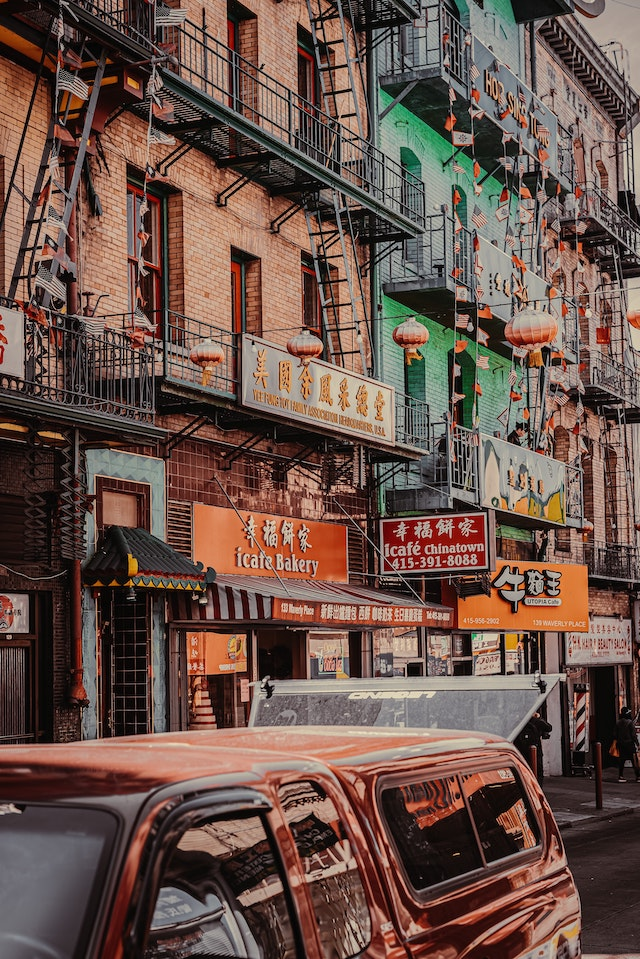
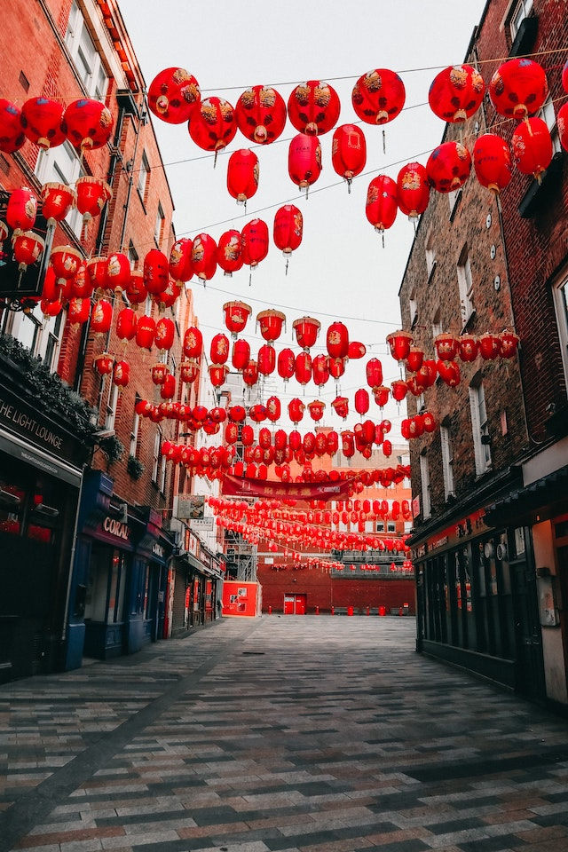
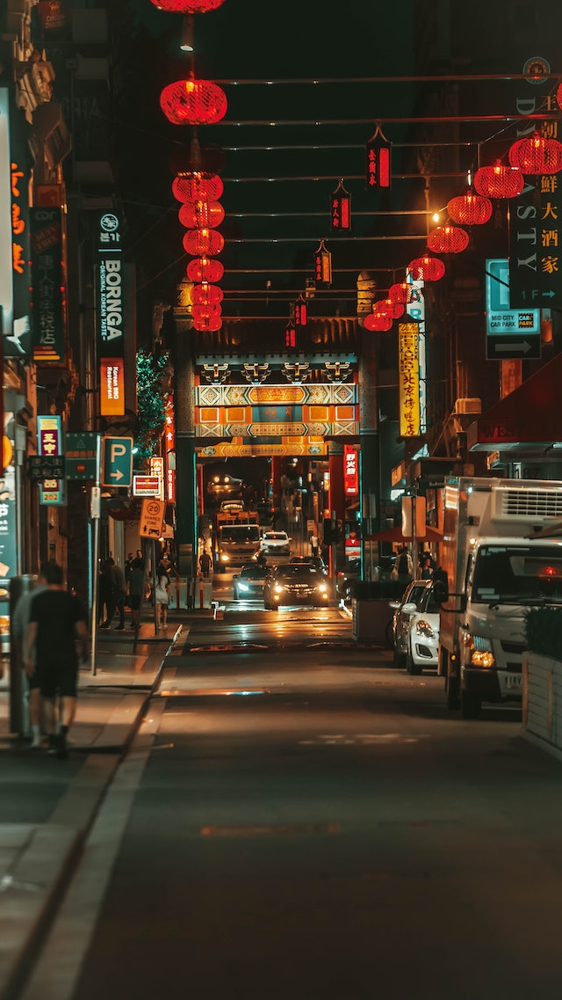
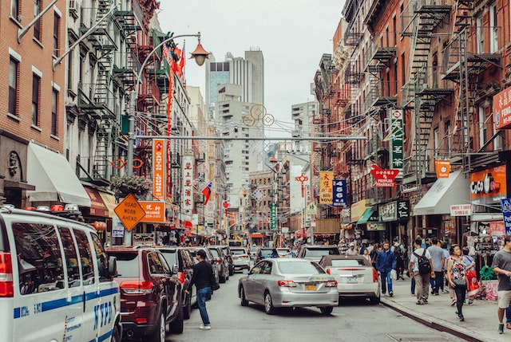

Environmental Justice

|
 |
|
Chinatown in 'high exposure zone' for unregulated air pollutants, study shows |
Air Pollution in Chinatown Continues to Alarm Residents |
|
As a neighborhood wedged between two highways, Chinatown has been plagued with poor air quality for years. |
Do you know Boston Chinatown has the worst air quality in the state? If you are a resident of Boston’s Chinatown, your good night’s sleep is being harmed by the car exhaust in the air. If you work in Chinatown, you are probably breathing polluted air for eight or more hours a day. Even if you are a visitor to Chinatown and enjoying a delicious Chinese meal with your friends, you are breathing in polluted air filled with high levels of PM2.5 and ultra-fine particles. Nationwide, a PM2.5 has been going down, but not in Chinatown. |
|  |  |
|
Inequitable Exposure to Air Pollution from Vehicles in Massachusetts |
Air pollution in Boston's Chinatown and Income Disparity |
|
Tailpipe emissions from cars, trucks and buses are a leading source of harmful air pollution in Massachusetts. This pollution has a significant impact on the health of the region’s residents, and varies greatly geographically and across different types of communities in the Commonwealth. |
Boston’s Chinatown is the third largest in the United states, and like many Boston neighborhoods build on top of a landfill. Due to developing railways the area became less desirable to earlier immigrants of mostly Jewish, Irish, and Italian descent. |
|  | |
|
Roadway Pollution in Chinatown and Somerville |
|
|
MAPC is working with CAFEH (Community Assessment of Freeway Exposure and Health) to address pollution from highways and busy roadways in Somerville and Chinatown. CAFEH is a larger umbrella for several related air pollution studies in Somerville and other neighborhoods in and around Boston. The CAFEH partnership combines community, government and academic resources to advance scientific understanding of how highway-generated air pollutants, including ultrafine particulates (UFP), impact the health of communities near highways. |
|